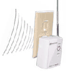
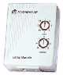

Consider small computers. No, not notebooks, subnotebooks or even "embedded" single board controllers. WinCE, Psion, Palm -- still way too big. Game consoles, microwave oven keypads, clock radios? Getting closer. TV remotes, computer keyboards, and talking toys are at the top end of this class. The real foot soldier of home automation is the microcontroller -- a tiny computer optimized to do a few things well. Tiny is the key word here -- microcontrollers need to be small, cheap, and able to run on low power.
In this article, we will introduce some of the nitty-gritty details of working with home automation. We'll talk about two microcontroller-based boxes you can connect to your computer: one simple (the CM17) and one complex (the CM11). Each sends messages to devices which plug into your house power and control individual items (one lamp or appliance per device). We'll start with the CM17 and use it to describe the commands, protocols, and timing issues common to most home control installations. Then we'll look at the CM11 and the extra complications associated with receiving commands. Finally, we'll look at some of the issues a real home automation application needs to consider.
Along the way, we'll examine some the Perl modules you can use to manipulate the CM17 and CM11. The examples will run on your computer even if you don't have any of the hardware, although you won't be able to "watch der blinkin' lights." In practice, the modules are commonly called from within a user environment such as MisterHouse, which Bruce Winter described in his article earlier in this issue.
The Perl slogan, "There's More Than One Way To Do It", also applies to home automation. There are lots of vendors, lots of products, multiple protocols, and a variety of command sets. You can build kits, purchase individual components, or even buy complete packages. Some of the products are even compatible. I've selected specific models for this article because the CPAN modules supporting them are the most mature, but don't consider that a product endorsement. Modules for other types and other vendor protocols are in development and will be available by the time you read this. Check the ControlX10:: namespace at your favorite CPAN site. The term 'X10' is a bit ambiguous; in this article, it refers to a mechanism for sending data messages via house wiring (power line modulation). There is also a company named X10 Inc. that manufactures and sells the CM11 and CM17 controllers.
Simple Output Commands: the CM17
| Figure 1. The FireCracker. |
| Figure 2 An X10 lamp module. |
|  |
Microcontrollers are designed to manage a small amount of rigidly defined I/O and to talk exclusively to other microcontrollers and computers. "Spartan" is a polite description for the user interface; it's tough to implement a shell, much less a modern GUI, in 256 bytes of RAM. You program microcontrollers by toggling individual bits or sending a handful of encoded bytes to a serial port. Each microcontroller implementation is different; fortunately, the gory details can be collected in Perl modules, so most users will never have to know them.
The ControlX10::CM17 And ControlX10::CM11 Modules
The ControlX10::CM17 and ControlX10::CM11 modules are collections of functions that make it possible for you to manipulate CM17 and CM11 boxes from your Perl program. We'll see a number of examples throughout this article. The first is so simple it requires no special hardware at all -- we'll simply pretend we have the necessary hardware and ask a CM17 to toggle a lamp on and off twice. (To actually turn something on and off, we'd need a serial port, a CM17, and a radio receiver that talks the same RF protocol.)
Our program below (Listing 1) imports the SerialStub.pl file (available on the TPJ web site), which creates an object that behaves like a serial port with a CM17 box plugged into it. We never talk to the actual box, but the CM17 module doesn't care -- it finds the methods it wants, so it's happy.
The main part of the example turns a device on and off twice. It creates an object and passes it to the send_cm17() function. We also turn on verbose output during the second toggle sequence to see how the command is translated.
What's In A Command?
The microcontroller in the CM17 uses only three of the wires in the serial port: a ground and two signals, called RTS and DTR. At least one of the signals must be on at all times to provide power to the microcontroller. The command is a series of 40 pulses (a 0 bit is RTS pulsing off, and a 1 bit is a DTR pulsing off). The CM17: Sending: lines above show typical 40-bit output strings.
The send_cm17() function takes a serial object and a command string as arguments, and calls a strange selection of serial object methods. It doesn't use either the read or write lines of the serial port -- it just passes them through so something else (a terminal, or device like a CM11) can use the port simultaneously (as long as it doesn't use DTR or RTS, and as long as the operating system permits port sharing -- some devices, like a serial mouse, need exclusive access).
The command_string usually contains three parts: the house code, the unit code, and the operation. There's one house code per house (out of sixteen possible: A..P), one unit code per appliance (1..9, A..G), and seven possible operations for the CM17:
$operation Function
xJ Unit On (requires unit code x)
xK Unit Off (requires unit code x)
L Brighten Last Light Programmed 14%
M Dim Last Light Programmed 14%
N All Lights Off
O All Lights On
P All Units Off
Not all receivers support operations L, M, N, and O.
This division into sixteen house (major) and sixteen unit (minor) parts is a common feature of the protocols. I'm not worried about interference here in rural Wisconsin, but the sixteen house settings mean that in a crowded apartment building your neighbor is less likely to be controlling your living room lights.
Our second example will toggle a real lamp or appliance on and off if you have a CM17, a transceiver, and a device controller set to address A1. You need a serial port module installed on your system: either Win32::SerialPort (for Windows) or Device::SerialPort (for Unix). On some operating systems, you will also need permission to open the port and access the hardware. See the documentation bundled with the SerialPort modules for specific platform details. Listing 2 will run without a CM17, but the results will be like those from Listing 1. (The module can't determine itself whether a CM17 is present.)
Listing 2 is almost exactly the same as Listing 1, and the output on your screen will be identical. The important differences are hidden in the require. All the initialization and operating system details are provided by start_port.pl, shown in Listing 3.
The BEGIN block at the start of Listing 3 is deceptively simple. In TPJ #13, I commented only briefly about Win32API::CommPort, which implements the actual operating system interface (the API calls) to the serial driver. Win32::SerialPort translates the primitive elements of the interface into more useful methods for your Perl program. Win32API::CommPort is currently 100% Perl, making the API calls via the Win32::API module. This division permits seamless conversion of Win32API::CommPort to XS to boost performance in the future.
Similarly, Device::SerialPort relies on POSIX.pm for portability across POSIX-compliant operating systems. Since both SerialPort modules have the same top level methods, most user code is easily transportable between operating systems; fully portable versions of the TPJ #13 code listings are available from the TPJ web site.
Listing 3 also checks that the OS-specific system calls (ioctls) needed to run the CM17 are available for your platform. If they aren't, you won't be able to control real hardware, but the examples will still run and print what they are doing. You'll see a === Bypassing ioctls === message if the module can't issue the necessary hardware pulses.
Let's see another example of the ControlX10::CM17 module. Here's Listing 4, slow_speed.pl:
Timing Issues
If you run Listing 4, you'll see output like this, after a delay that might be as long as ten seconds:
| Turning address A1 ON | Turning address A2 ON | Turning address A3 ON | Turning address A4 ON | Turning address A5 ON | Turning all house A OFF
Why is it so slow? The answer may seem frivolous: It doesn't need to be any faster. I mentioned earlier that the transceiver echoes commands to other devices via power line modulation. The X10 power line protocol transmits one bit per power line cycle and requires 47 cycles for a typical message -- around a second. If you have the appropriate hardware, you can run the following experiment: set a lamp module to the same address as a transceiver with a built-in mechanical relay. When you send an on or off command to that unit, you will hear the relay make an audible click about a second before the lamp responds. Since microcontrollers have small command buffers, you don't want to have too many operations pending. Running the CM17 module at about the same rate as the power line transmission reduces the amount of queueing and buffering needed.
Listing 5 is like Listing 4, but groups the units into related house addresses, letting a single pair of commands simultaneously alter up to 16 appliances.
This runs much faster.
Listing 6: cm11_no_hardware.pl
Bidirectional I/O with the CM11
Before we look at the issues involved in designing a home automation application, let's look at another type of hardware controller. The CM11 talks to a computer via a serial port, and communicates with unit modules only via household power lines. It also monitors the power lines for commands it didn't send, such as from motion detectors or RF transceivers, and reports those to the computer. It includes a built-in clock and even permits cron-like macro programming ("turn A3 ON at 09:00"). The CM11 interface is so unlike the CM17 that both devices can share the same serial port. Like Listing 1, this should run on all systems regardless of hardware.
A CM11 command consists of two parts: one or more addresses (a house/unit combination, like A2) and one or more operations (a house/operation combination, like AK). This is actually closer to the command signal format sent on the power lines than the 40-bit string we saw in the CM17.
The send_cm11() method looks much like the send_cm17() method used in earlier examples, but it does a lot more work. It computes a checksum, validates the transmission, handles retries, and checks for incoming data. The CM11 can also initiate communication, sending a single character "read me" request when it has data waiting to be processed.
Let's look at one final example that assumes we have the hardware we need to manipulate our appliances. The result is Listing 7, follow_leader.pl. After initializing, the program loops waiting for activity on unit A1. If it sees any, it sets A2 to the same state. This is a somewhat contrived example, but it illustrates some important elements of an automation control loop -- in part because it spends most of its time scanning for inputs of interest. (I used the $block option to get a loop timing of about a second instead of an explicit sleep 1.)
If you run follow_leader.pl without hardware, you'll see a result like this:
| ............... | Sending A2 ON | ...............
The example simulates receiving an A1 ON halfway through, and prints a dot roughly every second to indicate cycles through the loop. With a CM11 and an external RF command unit, you'll see output like the following:
| ..... | Received A1AJ | | Sending A2 ON | ....... | Received A1AK | | Sending A2 OFF | ....... | Received A1AJ | | Sending A2 ON | ...... | Received A1AK | | Sending A2 OFF | .....
A Few More Considerations in Building an Application
So what other issues are involved in creating a real home automation program? Earlier in this issue, Bruce Winter discusses some of the user interface issues and one approach to managing them. I'll concentrate on the issues that arise in a read/write hardware setup and those associated with multiple users as well. Most of these comments apply to both the CM11 and CM17 (and to other computer interfaces as well).
1. It takes a long time to talk to household appliances -- so long that if you're going to be having some appliances depend on what others are doing, or if you're going to have a spiffy user interface that monitors many appliances, you need an event queue. This lets your computer perform other tasks between attempts at communication.
2. A real application needs to know what is turned on and what is turned off. We can keep track of what we've done to each unit, or if CM11-style two-way communication is available we can send an "are you on" status query. However, this is slow, so we want to maintain a local model of the appliances whenever possible.
3. If we wish to allow commands from multiple sources (say, from a web page, command line, and program loop), or from multiple users, we need to resolve issues such as who "owns" the port.
4. Some means of override needs to be provided in case the state data becomes stale or invalid. When the computer is rebooted (or the program stopped and restarted), we won't know if an appliance is on or off unless we saved the previous state.
5. When many people have access to the same set of appliances, you might want to restrict access for certain user/appliance combinations. In this case, authentication may be required.
6. We have touched only lightly on error handling and event logging. The device controllers can detect many kinds of errors, including collisions on the power line and invalid commands. The CM11.pm module uses checksums to validate communications with the CM11 box, and the box itself can detect some errors and retry unsuccessful transmissions. The CM17 is a one-way device, so its error handling is more limited.
Bruce Winter has addressed most of these, and many more, in his excellent MisterHouse program. It's well worth a bit of study before you reinvent the wheel.
_ _END_ _